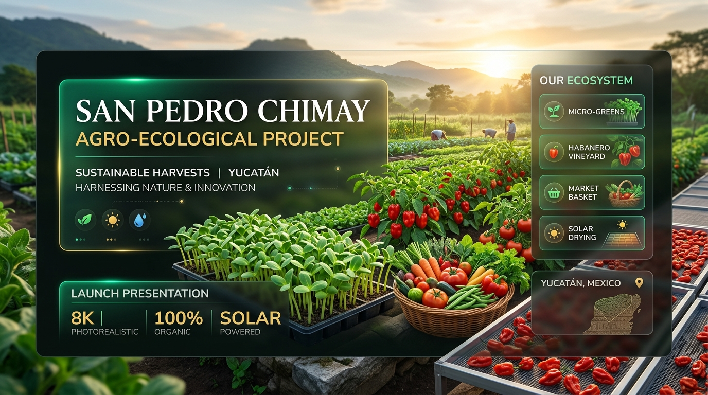
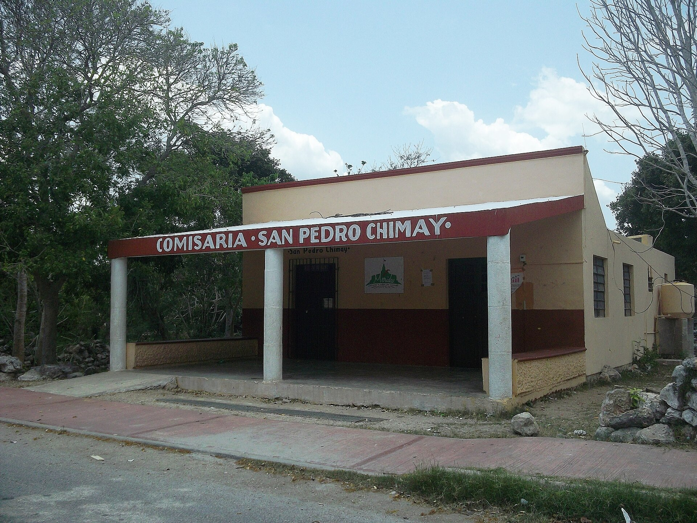
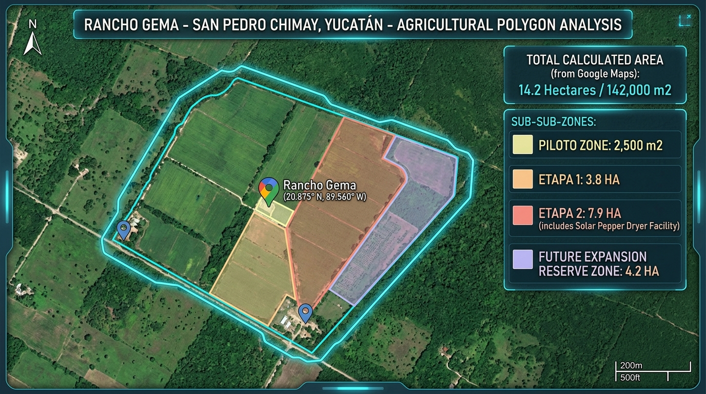
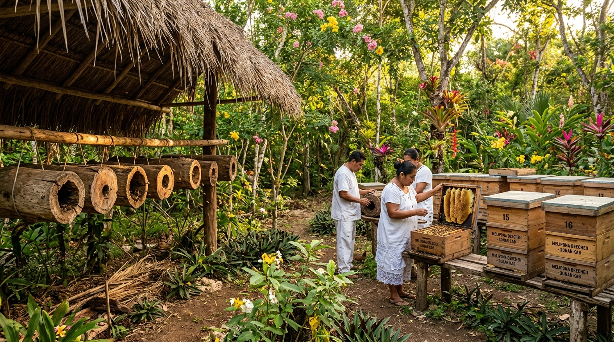
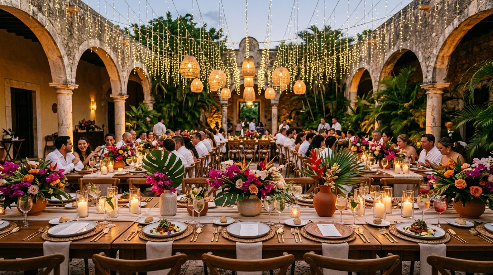
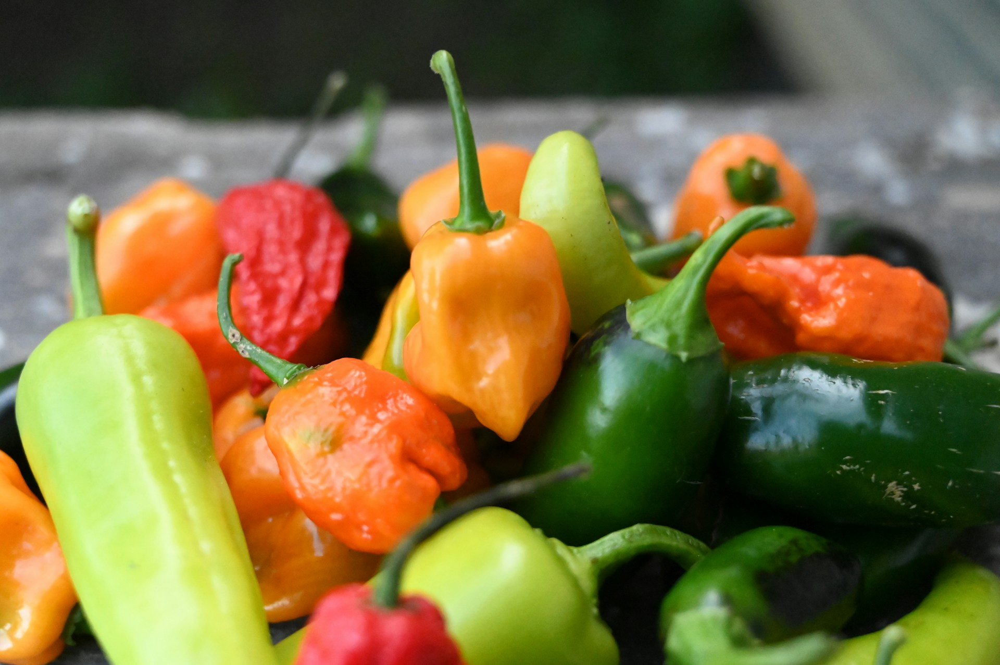
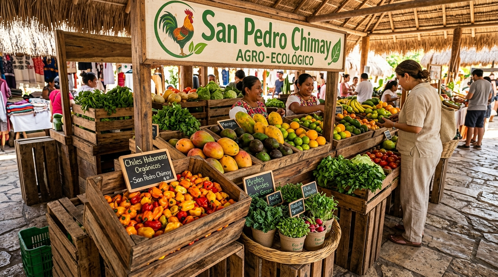

Cultivamos alimentos de excelencia organoléptica, microgreens vivos y hortalizas de herencia bajo principios regenerativos y biointensivos. Cosechados en Rancho Gema y entregados en menos de 25 minutos al circuito gastronómico de Mérida y Riviera Maya.

Un diseño territorial pensado para crecer de manera modular y regenerativa sin romper el equilibrio biológico de la selva baja maya.

Invernadero de 200 m² para brotes vivos, camas biointensivas de suelo mejorado Kankab, nave de compostaje Bokashi y bioles activos.
Fertirriego por goteo para Chile Habanero de especialidad, bancales de flores de corte comestibles, meliponario tradicional y talleres gastronómicos.
Huertos polivarietales de cítricos criollos yucatecos y nave agroindustrial de deshidratado solar pasivo con inocuidad grado alimenticio AISI 304.
Franja intangible de monte bajo yucateco, cortina rompevientos biológica y santuario para la floración silvestre de la abeja Melipona beecheii.
Alberga el Invernadero Tecnificado de 200 m² con microaspersión, camas biointensivas de suelo mejorado Luvisol (Kankab), nave de bioinsumos (Bokashi y biol), deshidratado solar y bodega de resguardo técnico.
Fusión de saberes agrícolas tradicionales mayas y biotecnología regenerativa de vanguardia. Cero improvisación, máxima pureza nutricional.
Sustituimos fertilizantes químicos por Bokashi fermentado en finca, bioles enriquecidos con microorganismos de montaña nativos y caldos minerales sulfocálcicos para el manejo etológico de plagas.
Trabajamos el suelo Luvisol crómico (*Kankab* maya), reconocido por su riqueza mineral y capacidad de retención de humedad en planicie kárstica, estructurado en camas biointensivas con doble excavación y cobertura viva.
Establecimiento de jobones tradicionales de *Melipona beecheii*, abeja maya sin aguijón. Garantizan polinización especializada de nuestros cultivos y producción de miel medicinal con valor botánico endémico.
Ubicados a solo 14 km del Periférico de Mérida. Cosechamos de madrugada y entregamos en pocas horas en la cocina del chef, eliminando los 1,350 km de transporte y deterioro desde el centro del país.
Diseñado para cubrir las demandas más exigentes de la gastronomía contemporánea, coctelería botánica y hogares comprometidos con la salud integral.
Brotes crocantes de picor especiado vibrante y tallo púrpura. Entregados vivos en sustrato orgánico con 100% de vitalidad.
Zarcillos rizados de textura crujiente y dulzor fresco a campo recién regado. Ideal para emplatados de alta precisión escultórica.
Hojas alargadas color azul verdoso oscuro, textura rugosa y sabor mineral profundo. Cultivado bajo sombra parcial para evitar amargor.
Zanahorias tempranas cosechadas a mano en tonos morado profundo, amarillo solar y naranja clásico. Dulzor tierno y crocante sin filamentos.
El ícono gastronómico de la Península con Denominación de Origen. Perfil aromático frutal penetrante, notas cítricas y picor limpio cultivado sin agroquímicos.
Flores frescas de pétalos vibrantes con notas florales y ligeros toques a berro pimienta. El insumo preferido de banqueteras en bodas de hacienda.
Miel medicinal fermentada naturalmente en cántaros de cera y propóleo por abejas nativas mayas. Notas ácidas botánicas y propiedades antibacterianas milenarias.
Deshidratado solar pasivo de hortalizas y chiles habaneros mezclados con flor de sal marina yucateca. Elaborado en nave higiénica con grado alimenticio.
Una arquitectura comercial diversificada que conecta el surco de San Pedro Chimay con los circuitos culinarios, comunitarios y de eventos más prestigiosos de Yucatán.
Abasto directo y programado a chefs ejecutivos de restaurantes de autor y hoteles boutique en Mérida y el corredor de la Riviera Maya.
Presencia activa en los mercados orgánicos y ferias Slow Food de Mérida, construyendo diálogo directo con consumidores conscientes.
Canastas agroecológicas semanales entregadas a domicilio mediante pedidos directos en plataforma web con entrega el mismo día.
Puntos de abasto accesibles para las familias de San Pedro Chimay y Timucuy, reintegrando la soberanía alimentaria con precios solidarios.
Diplomados prácticos y talleres de fines de semana en agricultura biointensiva, compostaje Bokashi y meliponicultura en finca.
Alianzas estratégicas con Wedding Planners y empresas de catering que atienden eventos de gala en haciendas históricas henequeneras.
Cenas y comidas exclusivas de autor ("Table to Farm") montadas entre las camas de cultivo con chefs invitados que cocinan con la cosecha del día.
Descubre el beneficio tangible para tu restaurante o negocio al sustituir hortalizas transportadas desde el centro del país por producción hiperlocal de San Pedro Chimay.
Parámetros Reales: Flete desde centros mayoristas en Puebla/CDMX a Mérida (~1,350 km) vs. Flete desde Rancho Gema (~14 km). Cada kilogramo consumido localmente evita días de transporte en cadena refrigerada y pérdidas de valor nutricional.
Fotografía documental del predio, la flora peninsular, el meliponario tradicional y los eventos en hacienda.




Un equipo con experiencia probada en agronomía regenerativa, alta gastronomía, estrategia comercial y cumplimiento legal institucional.
Especialista en biointensivo y permacultura con experiencia como proveedor de alta gastronomía (Verdant, Parrilla Paraíso) y proyectos regenerativos internacionales (Playa Viva, MUSA). Conduce las camas de cultivo, el invernadero y los bioinsumos en finca.
Especialista en estructuración macro-financiera, escalamiento comercial B2B para canales HORECA y despliegue de plataformas digitales de trazabilidad, control operativo y comercio electrónico.
Formalización societaria, regularización de concesiones hídricas y cumplimiento patronal. Gestión de vinculación institucional con dependencias del sector rural, comisarías de Chimay/Timucuy y relaciones públicas de marca.